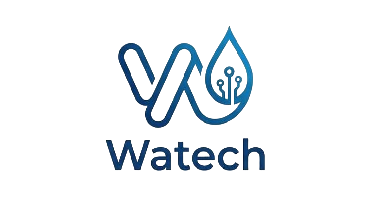

سیستم هوشمند مدیریت آب
هوشمندیِ پشتِ آبِ پاک
واتک با تلفیق حسگرهای پیشرفته اینترنت اشیاء (IoT) و تحلیلهای هوشمند، مدیریت آبهای صنعتی و شهری را متحول میکند و باعث حذف اتلاف منابع گرانبها میشود.

جامعه هدف ما
هوشمندسازی مدیریت آب در منازل و مجتمعهای مسکونی
تمرکز سیستم ما مدیریت مصرف آب و ذخیره سازی آب برای مجتمع های مسکونی است.
چرا فناوری هوشمند واتک؟
نصب آسان
نصب و راهاندازی سیستم ما برخلاف سیستم های مشابه، به سادگی انجام میشود و نیازی به دانش فنی خاص یا لوله کشی مجدد ندارد.
تضمین ایمنی
سیستم ما با استفاده از فناوریهای پیشرفته، ایمنی محل را تضمین میکند و از هرگونه خطر احتمالی جلوگیری میکند.
بازیافت کاربردی
واتک، امکان بازیافت آب را فراهم میکند و به حفظ منابع آبی کمک میکند.